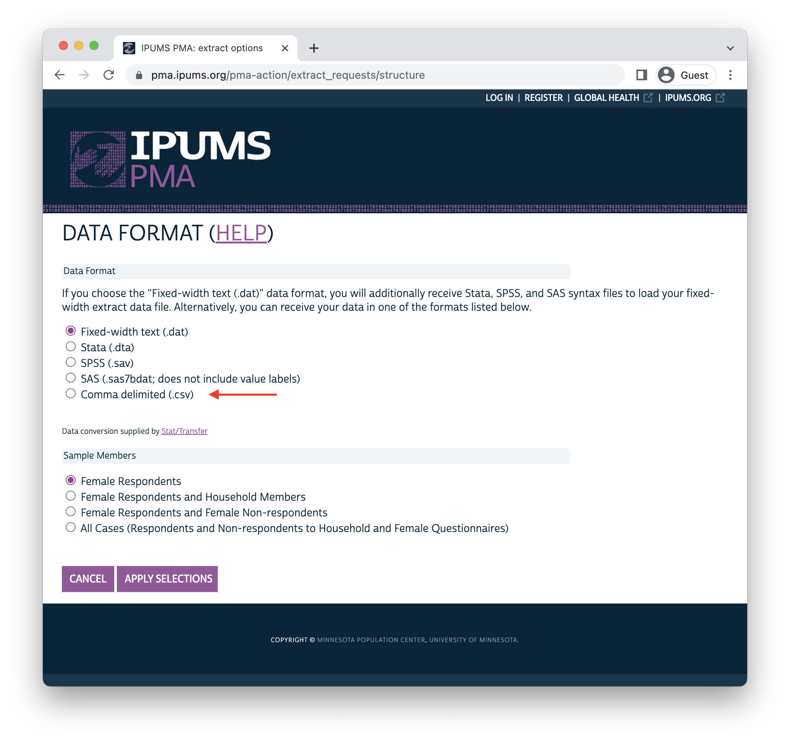

You can automatically generate documentation with the metadata included in your data extract, or supplement with additional details scraped from the IPUMS PMA website.
Have you ever wondered why IPUMS encourages R users to download data in the Fixed-width text (.dat) data format? After all, most analysts are probably more familiar with the Comma delimited (.csv) format, and you might already know some handy functions like read_csv that can help identify variable classes when you load .csv data into R.
In fact, IPUMS does make .csv data available at checkout. You can find it listed at the bottom of the Data Format menu here:

One big problem with using read_csv to import such a file is that the resulting dataset contains no helpful attributes to tell the analyst more about the data they’re working with!
Another issue is that read_csv makes a guess about the appropriate variable class for each column - and particularly when one of your columns contains a lot of blank strings, it can guess wrong. Here, we’ve downloaded a .csv file containing the variables ABORDECOTHSP and ABORCFOTHSP, which contain open string responses describing a woman’s abortion experience only if she 1) reported having an abortion, and 2) exhausted a number of response options listed on the questionnaire.
If you check the documentation for read_csv, you’ll see that read_csv makes guesses about column type based only on the first 1000 rows by default. In our dataset, the first 1000 rows for ABORDECOTHSP and ABORCFOTHSP are blank, so read_csv guesses that they might be logical, rather than character variables.
Warning: One or more parsing issues, call `problems()` on your data frame for details,
e.g.:
dat <- vroom(...)
problems(dat)Rows: 96481 Columns: 95
── Column specification ────────────────────────────────────────────────────────
Delimiter: ","
chr (2): PERSONID, FQINSTID
dbl (91): SAMPLE, COUNTRY, YEAR, ROUND, ELIGIBLE, EAID, CONSENTFQ, CONSENTHQ...
lgl (2): ABORDECOTHSP, ABORCFOTHSP
ℹ Use `spec()` to retrieve the full column specification for this data.
ℹ Specify the column types or set `show_col_types = FALSE` to quiet this message.This is a big problem! To see why, let’s count the responses in ABORDECOTHSP:
You should expect to see several responses listed here, but instead only NA values are found. This is because logical values should only be TRUE, FALSE, or NA - when R encounters any other value, it transforms them into NA by coercion. If you’re not careful with read_csv, it is easy to accidentally distort or remove data by coercion.
Meanwhile, if we examine a variable like COUNTRY, we’ll find only numeric codes with no value labels attached:
# A tibble: 8 × 2
COUNTRY n
<dbl> <int>
1 1 13385
2 2 8927
3 3 7546
4 6 11379
5 7 18926
6 9 16489
7 10 12780
8 11 7049You can certainly find the labels for each value on the IPUMS PMA website, but it would be much more convenient to have these and other attributes loaded into R.
Now let’s import the same data as a fixed width (.dat) file together with metadata provided by an accompanying .xml file. As recommended, we’ll use the function read_ipums_micro to load these two files into R.
library(ipumsr)
dat <- read_ipums_micro(
ddi = "data/pma_00180.xml",
data = "data/pma_00180.dat.gz"
)The .xml file contains all the information R needs to correctly identify the class for each variable. Note that ABORDECOTHSP now contains the string responses we expected to see (reported in the language spoken by the respondent):
# A tibble: 5 × 2
ABORDECOTHSP n
<chr> <int>
1 "" 96477
2 "Ami de son copin" 1
3 "Ex petit ami" 1
4 "tuteur" 1
5 "Une Camarade" 1Moreover, value labels for COUNTRY are printed to the console:
# A tibble: 8 × 2
COUNTRY n
<int+lbl> <int>
1 1 [Burkina Faso] 13385
2 2 [Congo, Democratic Republic] 8927
3 3 [Ethiopia] 7546
4 6 [India] 11379
5 7 [Kenya] 18926
6 9 [Nigeria] 16489
7 10 [Uganda] 12780
8 11 [Cote d'Ivoire] 7049In fact, value labels are only one of several attributes associated with each variable in an IPUMS dataset. The .xml file also provides 1) a brief label for each variable, and 2) the detailed variable description shown on the DESCRIPTION tab on our website. For instance, here is the DESCRIPTION tab for the variable PREGENDEV:
You can access all of the .xml metadata for PREGENDEV with the functions ipums_val_labels, ipums_var_label, and ipums_var_desc, or you can combine them into a tabular data dictionary with the function ipums_var_info. Let’s call this table dd.
dd <- dat %>% ipums_var_info()
dd# A tibble: 95 × 4
var_name var_label var_d…¹ val_la…²
<chr> <chr> <chr> <list>
1 SAMPLE PMA sample number "SAMPL… <tibble>
2 COUNTRY PMA country "COUNT… <tibble>
3 YEAR Year "YEAR … <tibble>
4 ROUND PMA survey round in this country "ROUND… <tibble>
5 PERSONID Unique person ID number "PERSO… <tibble>
6 ELIGIBLE Eligible female respondent "ELIGI… <tibble>
7 EAID Enumeration area "EAID … <tibble>
8 CONSENTFQ Female respondent provided consent to be intervi… "CONSE… <tibble>
9 FQINSTID Unique ID for female questionnaire "FQINS… <tibble>
10 CONSENTHQ Household respondent provided consent to be inte… "CONSE… <tibble>
11 FQWEIGHT Female weight "FQWEI… <tibble>
12 STRATA Strata "STRAT… <tibble>
13 PREGENDEV Ever had a pregnancy that miscarried, aborted, o… "PREGE… <tibble>
14 PREGEND Had pregnancy that ended in last 3 yrs "PREGE… <tibble>
15 ABORYRSAGO Number of years ago pregnancy ended "ABORY… <tibble>
16 PREGENDYR Year last pregnancy was terminated "For w… <tibble>
17 PREGENDMO Month last pregnancy was terminated "For w… <tibble>
18 ABORWHERE Where abortion was performed "ABORW… <tibble>
19 ABOREV Ever aborted pregnancy "ABORE… <tibble>
20 ABORMON Month of last aborted pregnancy "ABORM… <tibble>
# … with 75 more rows, and abbreviated variable names ¹var_desc, ²val_labelsJust a quick note on terminology here: the terms data dictionary and codebook are often used interchangeably. Personally, I think of a data dictionary as a tabular or machine-readable tool describing the contents of a dataset (usually for the purpose of improving user experience with statistical software); a codebook is usually - well, book-like. Analysts often create a codebook containing metadata and summary statistics for each variable in a survey dataset.
You might want access to a data dictionary like dd if you wanted to quickly identify all of the variables in a data extract that contain a search term like “abort”.
[1] "PREGENDEV" "ABORWHERE" "ABOREV" "ABORMON"
[5] "ABORYR" "ABOROTHER" "ABORNUM" "ABOR1STYR"
[9] "ABORMULT" "ABORONLYMETH" "ABORFIRSTMETH" "ABORLASTMETH"
[13] "ABORCARE" "ABORFIRSTMEDLOC" "ABORLASTMEDLOC" "ABORFIRSTSURGLOC"
[17] "ABORLASTSURGLOC" "ABORYPARENTS" "ABORDISCFRND1" "ABORDISCFRND2"
[21] "ABORDISCFRND3" "ABORDISCNONE" You can also search the detailed variable description for each variable the same way:
[1] "PREGENDEV" "PREGEND" "PREGENDYR" "PREGENDMO"
[5] "ABORWHERE" "ABOREV" "ABORMON" "ABORYR"
[9] "ABORINSCHOOL" "ABOROTHER" "ABORNUM" "ABOR1STYR"
[13] "ABORMULT" "ABORONLYMETH" "ABORFIRSTMETH" "ABORLASTMETH"
[17] "ABORCARE" "ABORFIRSTMEDLOC" "ABORLASTMEDLOC" "ABORFIRSTSURGLOC"
[21] "ABORLASTSURGLOC" "ABORYFETUSHLTH" "ABORYSOCIAL" "ABORYHEALTH"
[25] "ABORYMATURE" "ABORYMEANS" "ABORYPARENTS" "ABORYRAPE"
[29] "ABORYREADY" "ABORYHUS" "ABORYSCHOOL" "ABORYSINGLE"
[33] "ABORYLIMIT" "ABORYWORRIED" "ABORYOTH" "ABORDISCFRND1"
[37] "ABORDISCFRND2" "ABORDISCFRND3" "ABORDISCNONE" "ABORCFBRO"
[41] "ABORCFDAD" "ABORCFRND1" "ABORCFRND2" "ABORCFMOM"
[45] "ABORCFRNDOTH" "ABORCFRELOTH" "ABORCFPART" "ABORCFSIS"
[49] "ABORCFFRND" "ABORCFOTH" Another reason you might want access to a data dictionary is that - combined with tools like pagedown or bookdown- it can help generate a detailed codebook with just a few lines of code.
Here, we’ll build a quick codebook with pagedown, so we’ll need to create an RMarkdown file called codebook.Rmd with the following YAML header pointing to a helper CSS file in our working directory. We’ll specify that we want the output to be paginated for HTML (although we’ll ultimately tell R to turn that output into a PDF with chrome_print), and we’ll give a custom title to our Table Contents page.
---
output:
pagedown::html_paged:
toc: true
self_contained: false
toc-title: 'IPUMS PMA Codebook: <br>Pregnancy Termination Variables'
css: 'custom.css'
---The first few lines of code in this Rmarkdown file should load your dataset and create a data dictionary called dd as shown above. Additionally, we’ll drop the first 12 variables that are preselected for every IPUMS PMA data extract.
Besides the information already contained in dd, we might want to add a table showing the frequency of each response for every labelled variable (excluding mainly ID variables like EAID and FQINSTID). We’ll use gtsummary to create a frequency table for every such variable, and we’ll attach the results in a column called tbl in our data dictionary.
dd$tbl <- dd$var_name %>%
map(
~if(dat[[.x]] %>% is.labelled){
dat %>%
select(!!.x) %>%
mutate(across(where(is.labelled), ~.x %>% as_factor %>% fct_drop)) %>%
tbl_summary() %>%
modify_footnote(update = list(stat_0 ~ NA)) %>%
bold_labels() %>%
as_gt() %>%
tab_options(
column_labels.hidden = TRUE,
table.font.names = "cabrito_sans_norm_regular",
table.width = pct(100),
table.font.size = ".8em"
)
}
)Next we’ll use pwalk to iterate over each of the rows in dd: the walk family of functions works just like the iterative function map, except that the results are not returned in a list. Instead, we’ll call cat to capture the text results within each iteration.
What about the p in pwalk? This stands for “parallel” in the sense that an arbitrary number of inputs can be processed in parallel. In our case, we want to return text from the columns var_name and var_desc, and then return either HTML code representing our gtsummary table or an explanation like Table omitted for space constraints.
This is achieved with a custom function with unnamed arguments represented by the ellipsis ... - this carries all of the columns in each row of dd into a list we call text. Hence, text$var_name returns SAMPLE in the first iteration, while text$var_desc returns its variable description and text$tbl returns its gtsummary table. The second iteration returns text for COUNTRY, and so-on.
Once you’ve saved this RMarkdown file, type the following function directly into the R console to generate a PDF.
pagedown::chrome_print("codebook.Rmd","codebook.pdf")The result looks like this:
This codebook is a great start, but you’ll find even more metadata available on the IPUMS PMA website. For example, the AVAILABILITY tab for PREGENDEV tells us that this variable is only available for certain samples:
Although this information is not included in the .xml file we used to produce dd, we can easily scrape it from the website with help from the rvest package. First, locate the URL for the variable you want to scrape:
pma_url <- "https://pma.ipums.org/pma-action/variables/PREGENDEV"Next, we’ll load rvest and use a few of its basic functions to load the AVAILABILITY text into R. Each tab on the IPUMS PMA website is represented by CSS tag that also appears at the end of URL when you click on the tab. For example, clicking on the AVAILABILITY tab add the suffix #availability_section to the URL shown in pma_url.
Simply use read_html to read the full HTML for pma_url, then pipe the HTML to html_elements to select “#availability_section” and html_text2 to return the text located there.
library(rvest)
pma_text <- pma_url %>%
read_html() %>%
html_elements("#availability_section") %>%
html_text2()
pma_text[1] "Availability\nIndia: 2017, 2020\nUganda: 2020"This text includes special characters indicating line-breaks. Again, you can preview the formatted text with cat.
cat(pma_text)Availability
India: 2017, 2020
Uganda: 2020All of the tabs you’ll find on the IPUMS PMA site can be accessed this way, except for the CODES and QUESTIONNAIRE TEXT tabs. While the CODES tab is redundant with information already accessible in our dataset, there may be instances where you want to access the original text of the questionnaire. If you use the same approach to scrape it, you’ll get no results:
pma_url %>%
read_html() %>%
html_elements("#questionnaire_text_section") %>%
html_text2() [1] ""This is because Javascript is required to display text on both of these tabs. Fortunately, IPUMS also has a hidden static HTML page (which you can find by right-clicking on the QUESTIONNAIRE TEXT tab and clicking “inspect” on most browsers). You can use the following modified URL to scrape questionnaire text if needed:
pma_enum_text <- pma_url %>%
paste0("/ajax_enum_text") %>%
read_html() %>%
html_elements(".docSectionSample") %>%
map_df(
~c(
SAMPLE = .x %>% html_element(".td1") %>% html_text2(),
TEXT = .x %>% html_element(".enum_section_text") %>% html_text2()
)
)
pma_enum_text# A tibble: 3 × 2
SAMPLE TEXT
<chr> <chr>
1 India 2017a "1. Have you ever had a pregnancy that miscarried, was aborted, o…
2 India 2020 "207. Have you ever had a pregnancy that miscarried, was aborted,…
3 Uganda 2020 "207. Have you ever had a pregnancy that miscarried, was aborted,…So what if we want to add text from each tab to our codebook? We’ll just need to iterate over each tab for every variable, and then add the results to dd.
dd <- dd %>%
rowwise() %>%
mutate(
url = paste0("https://pma.ipums.org/pma-action/variables/", var_name),
comp = url %>%
read_html() %>%
html_elements("#comparability_section") %>%
html_text2(),
avail = url %>%
read_html() %>%
html_elements("#availability_section") %>%
html_text2(),
universe = url %>%
read_html() %>%
html_elements("#universe_section") %>%
html_text2(),
qtext = url %>%
paste0("/ajax_enum_text") %>%
read_html() %>%
html_elements(".docSectionSample") %>%
map_df(
~c(
SAMPLE = .x %>% html_element(".td1") %>% html_text2(),
TEXT = .x %>% html_element(".enum_section_text") %>% html_text2()
)
) %>%
list()
) %>%
ungroup()We’ll then need to modify the final chunk in codebook.Rmd to add the text from each of these new columns. Our data extract contains 17 different samples, so we’ll choose not to show the questionnaire text we’ve scraped in each case - you could easily add it, though, if it’s important to compare small variations in the question administred in each survey.
# Create headings for each metadata section
dd <- dd %>%
mutate(
var_name = var_name %>%
paste("#", ., "{.unnumbered}"),
comp = comp %>%
str_replace("Comparability", "#### Comparability {.unnumbered}\n"),
avail = avail %>%
str_replace_all("\n", "\n - ") %>%
str_replace("Availability", "#### Availability {.unnumbered}\n"),
universe = universe %>%
str_replace_all("\n", "\n - ") %>%
str_replace("Universe", "#### Universe {.unnumbered}\n")
)
# Add one new `cat` for each new metadata section
dd %>%
ungroup() %>%
pwalk(function(...){
text <- list(...)
text$var_name %>% cat("\n\n")
text$var_desc %>% cat("\n\n")
text$comp %>% cat("\n\n")
text$avail %>% cat("\n\n")
text$universe %>% cat("\n\n")
cat("#### Results {.unnumbered} \n\n")
if(is.null(text$tbl)){
cat("*Table omitted for space constraints*\n\n")
} else {
text$tbl %>% as_raw_html() %>% cat()
}
})And here’s the final result - a fully automated codebook containing nearly all of the metadata available for each variable in the Pregnancy Termination group on the IPUMS PMA website!